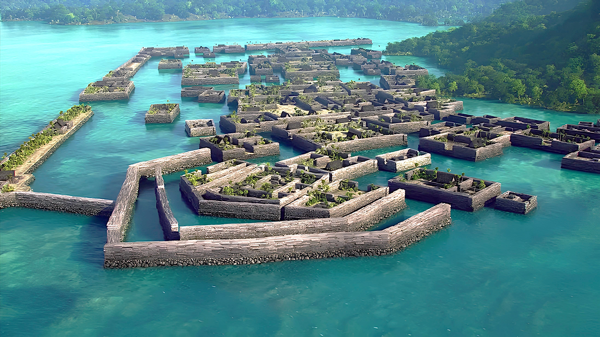

Welcome to Nan Madol
“The Venice of the Pacific”
Nan Madol is an archaeological site built on over 90 artificial islets connected by canals, off the shore of Pohnpei, Micronesia. This website explores its mysteries, legends, and ongoing preservation efforts.
